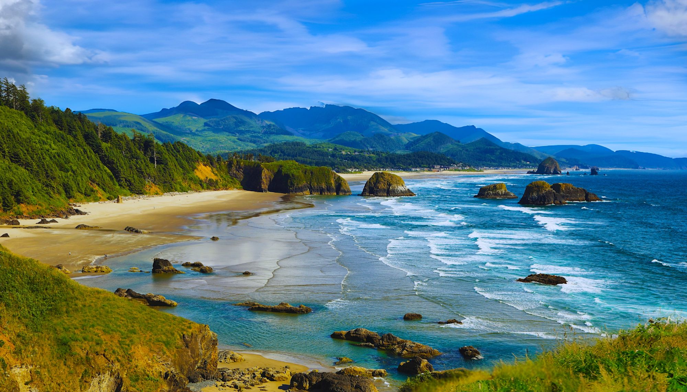
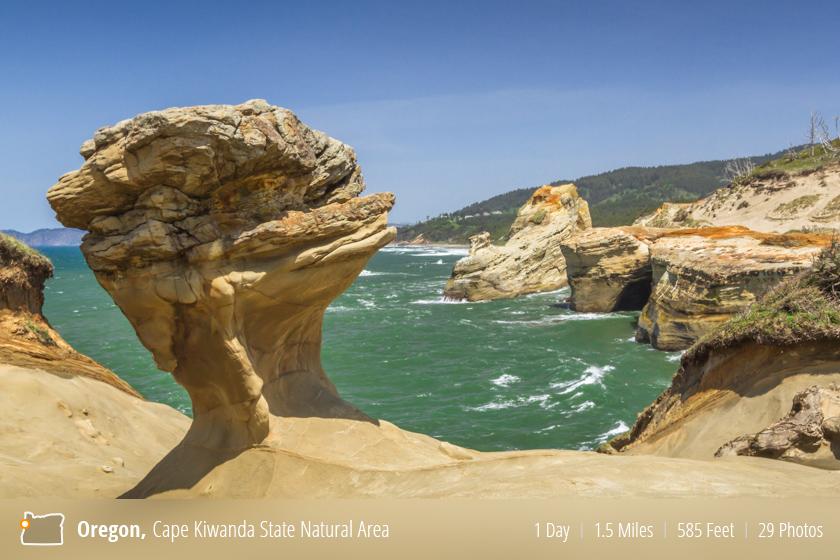

The Cannon Beach in Oregon has really beutiful scenery with the Haystack Rock, the centerpiece of the beach that is surronded by tide pools and seabirds.

Below is the Cape Kiwanda State Natural Area, located in Pacific City, Oregon. This is a very pretty beach known for its sand dunes and dramatic waves.

Home